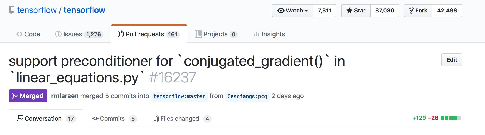

<!DOCTYPE html>


  


<html class="theme-next muse use-motion" lang="en">
<head>
  <meta charset="UTF-8"/>
<meta http-equiv="X-UA-Compatible" content="IE=edge" />
<meta name="viewport" content="width=device-width, initial-scale=1, maximum-scale=1"/>
<meta name="theme-color" content="#222">


<meta http-equiv="Cache-Control" content="no-transform" />
<meta http-equiv="Cache-Control" content="no-siteapp" />


  
  
  <link href="/lib/fancybox/source/jquery.fancybox.css?v=2.1.5" rel="stylesheet" type="text/css" />


  
  
  
  

  
    
    
  

  

  

  

  

  
    
    
    <link href="//fonts.googleapis.com/css?family=Lato:300,300italic,400,400italic,700,700italic&subset=latin,latin-ext" rel="stylesheet" type="text/css">
  


<link href="/lib/font-awesome/css/font-awesome.min.css?v=4.6.2" rel="stylesheet" type="text/css" />

<link href="/css/main.css?v=5.1.2" rel="stylesheet" type="text/css" />


  <meta name="keywords" content="Tec,TensorFlow," />


  <link rel="shortcut icon" type="image/x-icon" href="/favicon.ico?v=5.1.2" />


<meta name="description" content="先放上截图，庆祝本渣渣第一次为开源项目贡献自己的代码，撒花撒花 🍾🎊🍻🎉🎉🎉，嗯，竟然还是大名鼎鼎的 TensorFlow，虽然我只是做了些微不足道的贡献，但还是难掩心中的喜悦。">
<meta name="keywords" content="Tec,TensorFlow">
<meta property="og:type" content="article">
<meta property="og:title" content="在 TensorFlow 打卡人生第一次 PR">
<meta property="og:url" content="http://fangs.in/post/thinkstats/tec/firstPullRequest/index.html">
<meta property="og:site_name" content="Cesco: a minimal blog">
<meta property="og:description" content="先放上截图，庆祝本渣渣第一次为开源项目贡献自己的代码，撒花撒花 🍾🎊🍻🎉🎉🎉，嗯，竟然还是大名鼎鼎的 TensorFlow，虽然我只是做了些微不足道的贡献，但还是难掩心中的喜悦。">
<meta property="og:locale" content="en">
<meta property="og:image" content="http://fangs.in/images/tensorflow_pr/tensorflow_pr.png">
<meta property="og:updated_time" content="2018-02-07T07:42:29.000Z">
<meta name="twitter:card" content="summary">
<meta name="twitter:title" content="在 TensorFlow 打卡人生第一次 PR">
<meta name="twitter:description" content="先放上截图，庆祝本渣渣第一次为开源项目贡献自己的代码，撒花撒花 🍾🎊🍻🎉🎉🎉，嗯，竟然还是大名鼎鼎的 TensorFlow，虽然我只是做了些微不足道的贡献，但还是难掩心中的喜悦。">
<meta name="twitter:image" content="http://fangs.in/images/tensorflow_pr/tensorflow_pr.png">


<script type="text/javascript" id="hexo.configurations">
  var NexT = window.NexT || {};
  var CONFIG = {
    root: '/',
    scheme: 'Muse',
    sidebar: {"position":"left","display":"post","offset":12,"offset_float":12,"b2t":false,"scrollpercent":false,"onmobile":false},
    fancybox: true,
    tabs: true,
    motion: true,
    duoshuo: {
      userId: '0',
      author: 'Author'
    },
    algolia: {
      applicationID: '',
      apiKey: '',
      indexName: '',
      hits: {"per_page":10},
      labels: {"input_placeholder":"Search for Posts","hits_empty":"We didn't find any results for the search: ${query}","hits_stats":"${hits} results found in ${time} ms"}
    }
  };
</script>


  <link rel="canonical" href="http://fangs.in/post/thinkstats/tec/firstPullRequest/"/>


  <title>在 TensorFlow 打卡人生第一次 PR | Cesco: a minimal blog</title>
  


</head>

<body itemscope itemtype="http://schema.org/WebPage" lang="en">

  
  
    
  

  <div class="container sidebar-position-left page-post-detail ">
    <div class="headband"></div>

    <header id="header" class="header" itemscope itemtype="http://schema.org/WPHeader">
      <div class="header-inner"><div class="site-brand-wrapper">
  <div class="site-meta ">
    

    <div class="custom-logo-site-title">
      <a href="/"  class="brand" rel="start">
        <span class="logo-line-before"><i></i></span>
        <span class="site-title">Cesco: a minimal blog</span>
        <span class="logo-line-after"><i></i></span>
      </a>
    </div>
      
        <p class="site-subtitle"></p>
      
  </div>

  <div class="site-nav-toggle">
    <button>
      <span class="btn-bar"></span>
      <span class="btn-bar"></span>
      <span class="btn-bar"></span>
    </button>
  </div>
</div>

<nav class="site-nav">
  

  
    <ul id="menu" class="menu">
      
        
        <li class="menu-item menu-item-home">
          <a href="/" rel="section">
            
              <i class="menu-item-icon fa fa-fw fa-home"></i> <br />
            
            Home
          </a>
        </li>
      
        
        <li class="menu-item menu-item-about">
          <a href="/about/" rel="section">
            
              <i class="menu-item-icon fa fa-fw fa-user"></i> <br />
            
            About
          </a>
        </li>
      
        
        <li class="menu-item menu-item-archives">
          <a href="/archives/" rel="section">
            
              <i class="menu-item-icon fa fa-fw fa-archive"></i> <br />
            
            Archives
          </a>
        </li>
      
        
        <li class="menu-item menu-item-tags">
          <a href="/tags/" rel="section">
            
              <i class="menu-item-icon fa fa-fw fa-tags"></i> <br />
            
            Tags
          </a>
        </li>
      

      
    </ul>
  

  
</nav>


 </div>
    </header>

    <main id="main" class="main">
      <div class="main-inner">
        <div class="content-wrap">
          <div id="content" class="content">
            

  <div id="posts" class="posts-expand">
    

  

  
  
  

  <article class="post post-type-normal" itemscope itemtype="http://schema.org/Article">
  
  
  
  <div class="post-block">
    <link itemprop="mainEntityOfPage" href="http://fangs.in/post/thinkstats/tec/firstPullRequest/">

    <span hidden itemprop="author" itemscope itemtype="http://schema.org/Person">
      <meta itemprop="name" content="Cesc Fangs">
      <meta itemprop="description" content="">
      <meta itemprop="image" content="/uploads/avatar.jpg">
    </span>

    <span hidden itemprop="publisher" itemscope itemtype="http://schema.org/Organization">
      <meta itemprop="name" content="Cesco: a minimal blog">
    </span>

    
      <header class="post-header">

        
        
          <h1 class="post-title" itemprop="name headline">在 TensorFlow 打卡人生第一次 PR</h1>
        

        <div class="post-meta">
          <span class="post-time">
            
              <span class="post-meta-item-icon">
                <i class="fa fa-calendar-o"></i>
              </span>
              
                <span class="post-meta-item-text">Posted on</span>
              
              <time title="Post created" itemprop="dateCreated datePublished" datetime="2018-01-26T15:11:00+08:00">
                2018-01-26
              </time>
            

            

            
          </span>

          
            <span class="post-category" >
            
              <span class="post-meta-divider">|</span>
            
              <span class="post-meta-item-icon">
                <i class="fa fa-folder-o"></i>
              </span>
              
                <span class="post-meta-item-text">In</span>
              
              
                <span itemprop="about" itemscope itemtype="http://schema.org/Thing">
                  <a href="/categories/thinkstats/" itemprop="url" rel="index">
                    <span itemprop="name">thinkstats</span>
                  </a>
                </span>

                
                
              
            </span>
          

          
            
              <span class="post-comments-count">
                <span class="post-meta-divider">|</span>
                <span class="post-meta-item-icon">
                  <i class="fa fa-comment-o"></i>
                </span>
                <a href="/post/thinkstats/tec/firstPullRequest/#comments" itemprop="discussionUrl">
                  <span class="post-comments-count disqus-comment-count"
                        data-disqus-identifier="post/thinkstats/tec/firstPullRequest/" itemprop="commentCount"></span>
                </a>
              </span>
            
          

          
          

          

          

          

        </div>
      </header>
    

    
    
    
    <div class="post-body" itemprop="articleBody">

      
      

      
        <p>先放上截图，庆祝本渣渣第一次为开源项目贡献自己的代码，撒花撒花 🍾🎊🍻🎉🎉🎉，嗯，竟然还是大名鼎鼎的 TensorFlow，虽然我只是做了些微不足道的贡献，但还是难掩心中的喜悦。 <a id="more"></a></p>
<div class="figure">

<p class="caption">tensorflow_pr</p>
</div>
<p>参与开源项目的想法由来已久，但一直以来觉得自己实力不够，还远远没有达到 contributor 的水平，这次能为 TensorFlow 社区提交代码也是刚好赶上毕业论文与 TensorFlow 有关，当时需要用到共轭梯度法，但是 TensorFlow 里的并不支持预处理，我就实现了一下提交了上去，从发起 pull request 到成功 merge 到 master 分支，大概一周的时间。虽然我添加50行左右，谷歌工程师还是提出了很多修改意见，印象特别深的是对于注释的要求，真的非常细致，逗号换成句号，增加一些我以为“没什么必要”的说明，不知道 <a href="https://github.com/rmlarsen" target="_blank" rel="external">rmlarson</a> 大神会不会想“我自己现在来写一个可能还快点哈哈哈哈”。</p>
<p>从计算流体力学领域跨到机器学习，跨度不可谓不大，这一路走来非常感谢互联网行业的包容与开放，这也是我最喜欢这个行业的地方，尽管我本硕都不是 CS 相关专业的，但还是得到了不少互联网公司的认可，印象最深的是实习结束拿到转正 offer 后老大和我说“虽然你不是计算机专业的，但是我们更看好你，能达到与其他人一样的水平，说明你未来的潜力更大”。</p>
<p>自学机器学习的过程基本上以公开课+书+Kaggle 为主，辅以大神们的博客，长期受益于开源社区，当然也想着有朝一日能为这个社区做点什么，像我这样能力有限，经验不足但是又想为开源社区做点贡献的，最可行的方法就是向已有的项目提交代码。</p>
<p>刚开始觉得像 TensorFlow 这种大神们开发的项目我是没有什么机会参与的，其实不然，TensorFlow 虽然庞大但层次结构清晰，从硬件层到核心计算层再到 Python 的高级接口，总有你看得懂、能参与的地方，我这次的提交的代码就是建立在 Python 接口上的，TensorFlow 底层的实现我基本都没看过，但是这并不影响我参与到 TensorFlow 中。除此之外，像错别字修改、丰富文档这些工作也是开源项目的一部分，好的项目往往有着统一的代码风格和详实的文档资料，这些工作也需要我们的参与。</p>

      
    </div>
    
    
    

    

    

    

    <footer class="post-footer">
      
        <div class="post-tags">
          
            <a href="/tags/tec/" rel="tag"># Tec</a>
          
            <a href="/tags/tensorflow/" rel="tag"># TensorFlow</a>
          
        </div>
      

      
      
      

      
        <div class="post-nav">
          <div class="post-nav-next post-nav-item">
            
              <a href="/post/thinkstats/decisiontree0/" rel="next" title="决策树系列0:你需要一棵决策树">
                <i class="fa fa-chevron-left"></i> 决策树系列0:你需要一棵决策树
              </a>
            
          </div>

          <span class="post-nav-divider"></span>

          <div class="post-nav-prev post-nav-item">
            
              <a href="/post/tec/utils/vscode/" rel="prev" title="vscode 奇淫巧技">
                vscode 奇淫巧技 <i class="fa fa-chevron-right"></i>
              </a>
            
          </div>
        </div>
      

      
      
    </footer>
  </div>
  
  
  
  </article>


    <div class="post-spread">
      
    </div>
  </div>


          </div>
          


          
  <div class="comments" id="comments">
    
      <div id="disqus_thread">
        <noscript>
          Please enable JavaScript to view the
          <a href="https://disqus.com/?ref_noscript">comments powered by Disqus.</a>
        </noscript>
      </div>
    
  </div>


        </div>
        
          
  
  <div class="sidebar-toggle">
    <div class="sidebar-toggle-line-wrap">
      <span class="sidebar-toggle-line sidebar-toggle-line-first"></span>
      <span class="sidebar-toggle-line sidebar-toggle-line-middle"></span>
      <span class="sidebar-toggle-line sidebar-toggle-line-last"></span>
    </div>
  </div>

  <aside id="sidebar" class="sidebar">
    
    <div class="sidebar-inner">

      

      

      <section class="site-overview sidebar-panel sidebar-panel-active">
        <div class="site-author motion-element" itemprop="author" itemscope itemtype="http://schema.org/Person">
          
          <p class="site-author-name" itemprop="name">Cesc Fangs</p>
           
              <p class="site-description motion-element" itemprop="description">南山有部队，北海有火锅</p>
          
        </div>
        <nav class="site-state motion-element">

          
            <div class="site-state-item site-state-posts">
              <a href="/archives/">
                <span class="site-state-item-count">27</span>
                <span class="site-state-item-name">posts</span>
              </a>
            </div>
          

          
            
            
            <div class="site-state-item site-state-categories">
              
                <span class="site-state-item-count">6</span>
                <span class="site-state-item-name">categories</span>
              
            </div>
          

          
            
            
            <div class="site-state-item site-state-tags">
              <a href="/tags/index.html">
                <span class="site-state-item-count">21</span>
                <span class="site-state-item-name">tags</span>
              </a>
            </div>
          

        </nav>

        

        <div class="links-of-author motion-element">
          
            
              <span class="links-of-author-item">
                <a href="https://github.com/Cescfangs" target="_blank" title="GitHub">
                  
                    <i class="fa fa-fw fa-github"></i>
                  
                    
                      GitHub
                    
                </a>
              </span>
            
              <span class="links-of-author-item">
                <a href="http://weibo.com/Cescfangs" target="_blank" title="Weibo">
                  
                    <i class="fa fa-fw fa-weibo"></i>
                  
                    
                      Weibo
                    
                </a>
              </span>
            
              <span class="links-of-author-item">
                <a href="https://www.zhihu.com/people/cescfangs" target="_blank" title="Zhihu">
                  
                    <i class="fa fa-fw fa-bookmark-o"></i>
                  
                    
                      Zhihu
                    
                </a>
              </span>
            
              <span class="links-of-author-item">
                <a href="http://t.me/cescfangs" target="_blank" title="Telegram">
                  
                    <i class="fa fa-fw fa-telegram"></i>
                  
                    
                      Telegram
                    
                </a>
              </span>
            
          
        </div>

        
        

        
        

        


      </section>

      

      

    </div>
  </aside>


        
      </div>
    </main>

    <footer id="footer" class="footer">
      <div class="footer-inner">
        <div class="copyright" >
  
  &copy;  2015 - 
  <span itemprop="copyrightYear">2018</span>
  <span class="with-love">
    <i class="fa fa-heart"></i>
  </span>
  <span class="author" itemprop="copyrightHolder">Cesc Fangs</span>
</div>


<div class="powered-by">
  Powered by <a class="theme-link" href="https://hexo.io">Hexo</a>
</div>

<div class="theme-info">
  Theme -
  <a class="theme-link" href="https://github.com/iissnan/hexo-theme-next">
    NexT.Muse
  </a>
</div>


        

        
      </div>
    </footer>

    
      <div class="back-to-top">
        <i class="fa fa-arrow-up"></i>
        
      </div>
    

  </div>

  

<script type="text/javascript">
  if (Object.prototype.toString.call(window.Promise) !== '[object Function]') {
    window.Promise = null;
  }
</script>


  


  
  <script type="text/javascript" src="/lib/jquery/index.js?v=2.1.3"></script>

  
  <script type="text/javascript" src="/lib/fastclick/lib/fastclick.min.js?v=1.0.6"></script>

  
  <script type="text/javascript" src="/lib/jquery_lazyload/jquery.lazyload.js?v=1.9.7"></script>

  
  <script type="text/javascript" src="/lib/velocity/velocity.min.js?v=1.2.1"></script>

  
  <script type="text/javascript" src="/lib/velocity/velocity.ui.min.js?v=1.2.1"></script>

  
  <script type="text/javascript" src="/lib/fancybox/source/jquery.fancybox.pack.js?v=2.1.5"></script>


  


  <script type="text/javascript" src="/js/src/utils.js?v=5.1.2"></script>

  <script type="text/javascript" src="/js/src/motion.js?v=5.1.2"></script>


  
  

  
  <script type="text/javascript" src="/js/src/scrollspy.js?v=5.1.2"></script>
<script type="text/javascript" src="/js/src/post-details.js?v=5.1.2"></script>


  


  <script type="text/javascript" src="/js/src/bootstrap.js?v=5.1.2"></script>


  


  

    
      <script id="dsq-count-scr" src="https://Cescfangs.disqus.com/count.js" async></script>
    

    
      <script type="text/javascript">
        var disqus_config = function () {
          this.page.url = 'http://fangs.in/post/thinkstats/tec/firstPullRequest/';
          this.page.identifier = 'post/thinkstats/tec/firstPullRequest/';
          this.page.title = '在 TensorFlow 打卡人生第一次 PR';
        };
        var d = document, s = d.createElement('script');
        s.src = 'https://Cescfangs.disqus.com/embed.js';
        s.setAttribute('data-timestamp', '' + +new Date());
        (d.head || d.body).appendChild(s);
      </script>
    

  


	


  


  


  

  

  

  
  
    <script type="text/x-mathjax-config">
      MathJax.Hub.Config({
        tex2jax: {
          inlineMath: [ ['$','$'], ["\\(","\\)"]  ],
          processEscapes: true,
          skipTags: ['script', 'noscript', 'style', 'textarea', 'pre', 'code']
        }
      });
    </script>

    <script type="text/x-mathjax-config">
      MathJax.Hub.Queue(function() {
        var all = MathJax.Hub.getAllJax(), i;
        for (i=0; i < all.length; i += 1) {
          all[i].SourceElement().parentNode.className += ' has-jax';
        }
      });
    </script>
    <script type="text/javascript" src="//cdn.bootcss.com/mathjax/2.7.1/latest.js?config=TeX-AMS-MML_HTMLorMML"></script>
  


  

  

</body>
</html>
